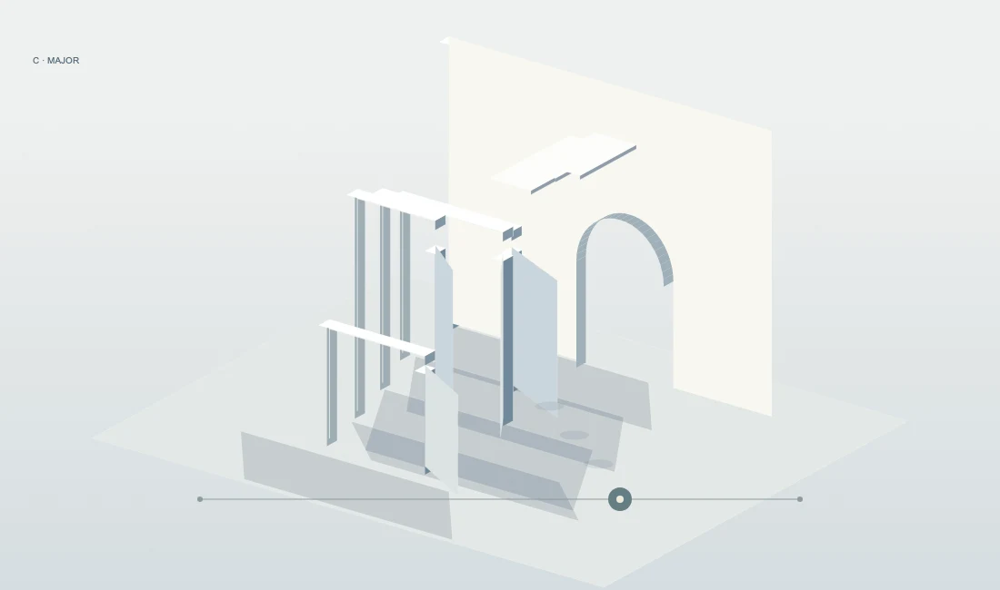
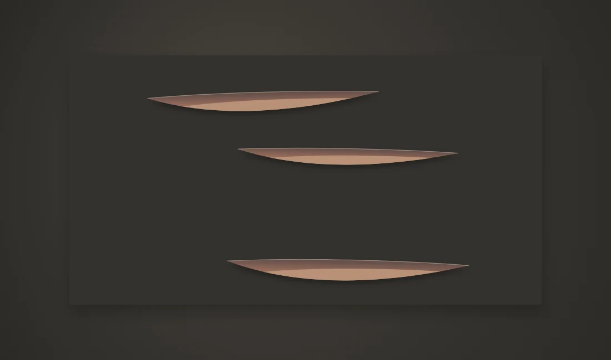
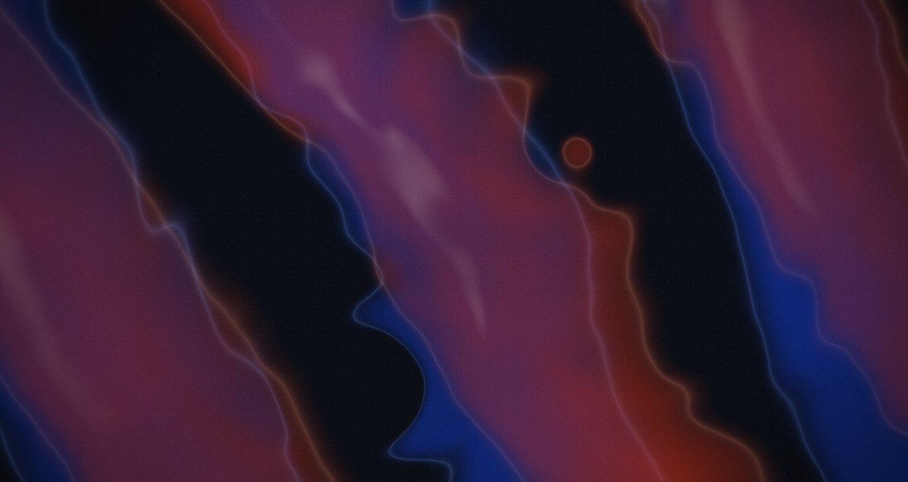

01 Resonant Architecture
共振建築
《空氣有自己的骨架》
長音使薄壁凝聚，和弦改寫通道。走進一座由耳朵看見的建築。
薄壁 / 拱門 / 持續音
走進作品AN EXHIBITION IN EIGHT MOVEMENTS
聲音・空間・能量 / 2026
聽見之後，留下什麼？
GENERATIVE SOUND ART — VOLUME ONE

01 Resonant Architecture
《空氣有自己的骨架》
長音使薄壁凝聚，和弦改寫通道。走進一座由耳朵看見的建築。
薄壁 / 拱門 / 持續音
走進作品02—05 / MATERIAL STUDIES
織成纖維，切開沉默。
時間在材料裡，留下可以看見的痕跡。

02 Chord Loom
《一首歌，被織成一匹布》
低音成為經線，旋律成為纖維。熟悉的樂句回來時，布面上的紋樣也跟著回來。
纖維 / 紋樣 / 聲部

03 Silence Cuts
《沉默把空間切開》
聲音繃緊紙面，劃開細縫；停下之後，沉默慢慢打開藏在深處的暖色。
紙面 / 切口 / 留白

04 Sound Fossil
《這首歌曾經存在》
一段旋律沉積成可被端詳的物件。最後一個音消失，生長停止，材料仍然記得。
石灰 / 礦脈 / 記憶

05 Phase Tides
《兩個幾乎同步的世界》
微小的速度差，逐漸成為一整片潮汐。兩層節奏慢慢錯開，再安靜地重新聚合。
鈷藍 / 朱紅 / 相位
06—08 / TRACES & TRANSFORMATIONS
一口氣、一段回聲、一次蓄積。
看不見的力量，終於有了形狀。
A NOTE ON LISTENING